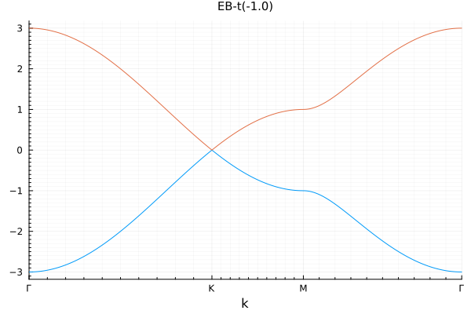
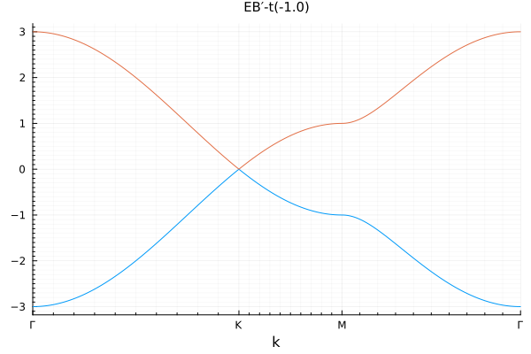
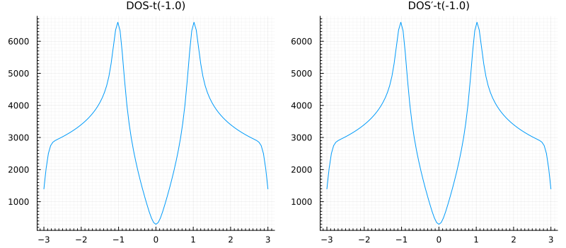
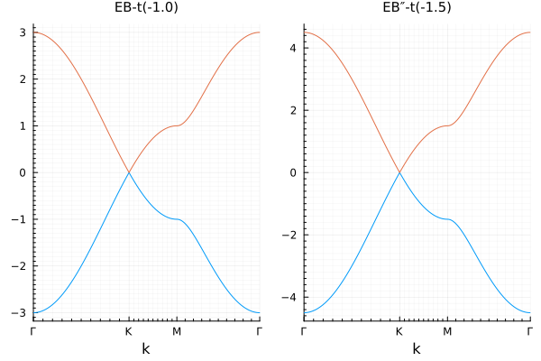
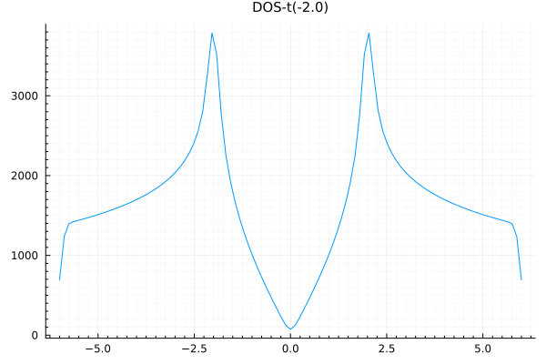
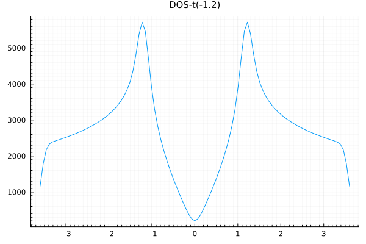

7. The Algorithm Interface: User Guide
Chapter 6 ended with a LatticeModel, which is a complete description of a quantum lattice system. Turning that description into numbers is the job of algorithms, which are developed separately from QuantumLattices (e.g., TightBindingApproximation, ExactDiagonalization, QuantumClusterTheories, DynamicalCorrelators, SpinWaveTheory, RandomPhaseApproximation, MeanFieldTheory, etc.). The algorithm interface described in this chapter is what connects the two, and it sets itself two goals: a uniform interface to all the supported algorithms, so that a model is defined once and can then be handed to any of them, and automatic project management, so that the bookkeeping of a calculation is carried by the interface rather than left to the user.
7.1 How to Read This Chapter
This chapter is for the user of an algorithm package. If you want to hand a model to an existing algorithm and run it, it is all you need: it shows the complete usage, from defining the model all the way to saving and visualizing the results, and the architecture of the interface is introduced as we go. The running example is ToyTBA, a minimal but complete algorithm package modelled on the real TightBindingApproximation package, whose whole source fits in a single file, ToyTBA.jl, included in this documentation. It computes the band structure and the density of states of a free-fermion lattice model, and the real packages of Section 7.6 are used in exactly the same way from the user's side. If you want to write such an algorithm package yourself, continue with Chapter 8, which dissects ToyTBA.jl piece by piece.
7.2 A Complete Calculation
The user side of the interface is small enough to be shown in full. First, build the model in the standard way of Chapter 6, wrap it by ToyTBA, and compute the band structure along a high-symmetry path:
unitcell = Lattice([0.0, 0.0], [0.0, √3/3]; vectors=[[1.0, 0.0], [0.5, √3/2]])
hilbert = Hilbert(Fock{:f}(1, 1), length(unitcell))
model = LatticeModel(unitcell, hilbert, Hopping(:t, -1.0, 1)) # OperatorGenerator
graphene = Algorithm(:Graphene, ToyTBA(model))
path = ReciprocalPath(unitcell, hexagon"Γ-K-M-Γ", length=100)
energybands = graphene(:EB, EigenSystem(path))
plot(energybands)
Meanwhile, the same computation works just as well when the Hamiltonian is supplied analytically, as a Formula:
function A₀(t, k=SVector(0.0, 0.0); kwargs...)
α = k[1]/2 + √3*k[2]/2
β = -k[1]/2 + √3*k[2]/2
h = t*(1 + exp(1im*α) + exp(1im*β))
return @SMatrix [0 conj(h); h 0]
end
model′ = LatticeModel(A₀, (t=-1.0,)) # Formula
graphene′ = Algorithm(:GrapheneAnalytic, ToyTBA(model′))
energybands′ = graphene′(:EB′, EigenSystem(path))
plot(energybands′)
The density of states over the whole Brillouin zone is computed the same way, for both representations alike:
brillouinzone = BrillouinZone(unitcell, 100)
eigensystem = graphene(:eigensystem, EigenSystem(brillouinzone); delay=true)
dos = graphene(:DOS, DensityOfStates(), eigensystem)
eigensystem′ = graphene′(:eigensystem′, EigenSystem(brillouinzone); delay=true)
dos′ = graphene′(:DOS′, DensityOfStates(), eigensystem′)
plot(plot(dos), plot(dos′), size=(800, 350))
7.3 The Frontend, the Algorithm and the Assignment
The computations above come in pairs that differ only in how the model is represented: an OperatorGenerator in one, and a Formula in the other. Everything else, including the computation tasks such as EigenSystem and DensityOfStates, the assignments named by :EB, :EB′, :DOS and :DOS′, and the corresponding results that come back, is identical within each pair. It is ToyTBA that absorbs the difference between the representations, so that a single algorithm works with any model. Such a type is called a frontend, which itself is a subtype of LatticeModel. Every algorithm package defines its own frontend, allowing the computational workflow independent of the underlying representations.
Another important role that a frontend plays is that it recasts a model into the form a particular algorithm needs. Different algorithms need the Hamiltonian in different forms, and neither representation of Chapter 6 knows anything about them. A tight-binding calculation needs a quadratic form on a basis of the single-particle space while exact diagonalization needs a sparse matrix in the occupation-number representation of the many-body Hilbert space. This conversion belongs to the algorithm, not to the model, and the frontend is where it lives.
The interface is then made of three objects:
- the frontend: the
LatticeModelsubtype just described, defined by the algorithm package. Algorithm: the execution layer of the interface. Different algorithms compute different things, but executing them involves the same practical concerns, such as recording and resuming results, collecting timings, and tracking the current parameter values that steer updates and caching. AnAlgorithmimplements these once, uniformly for every algorithm package. It is the object you call: calling it creates an assignment.Assignment: a computation task assigned to an algorithm. It pairs the task, i.e., a plain struct saying what is computed, such asEigenSystem, with parameter values and dependencies on other assignments, and reserves a slot for the result, aData, whose prescribed form is what makes storing and plotting possible.
A computation then proceeds as follows:
model
│ ToyTBA(model)
▼
frontend ──▶ Algorithm(name, frontend, [parameters, map])
│
│ alg(name, task, [parameters,] dependencies...; options...)
│ ├── creates an Assignment
│ │ (dependencies: previously created assignments)
│ └── runs run!(alg, assignment), unless delay = true
▼
Assignment, now holding its DataThe examples of Section 7.2 have already exercised two parts of this flow. The eigen-system assignments were created with delay=true, so they were registered but not computed; the computation happened only when the density of states, whose assignment was given the eigen-system assignment as a dependency, was called for. And as the diagram shows, run! is not a step the user performs: it is the hook an algorithm package implements, invoked from inside the algorithm call.
7.4 Parameter Management
A calculation is rarely a single run: parameters are scanned, results are compared across runs, and the same model is revisited many times, often long after it was first defined. The interface therefore carries the bookkeeping along with it, rather than leaving it to the user. Every result is recorded together with the parameters that produced it, so that nothing is silently overwritten and nothing is read back wrongly. Results can be cached and reused, so that nothing is recomputed unnecessarily. And the tasks of a calculation may depend on one another, so that when the parameters of a task are changed, its next call recomputes it together with exactly those dependencies that are affected, and no others.
This automatic project management rests on two groups of the interface. Parameter management, built on Parameters and update!, tracks the current parameter values, which are what staleness is judged by; it is the subject of this section. Identity and persistence, built on str, config and stamp together with the save and load functions, keeps the records on disk; it is the subject of Section 7.5.
Parameter management comes in two forms, depending on whether the assignment carries dependencies.
7.4.1 Updating the Algorithm
When the assignment carries no dependency, the algorithm itself is updated and a fresh assignment is registered, so that the results of different parameter values accumulate and can be compared side by side:
update!(graphene; t=-1.5)
energybands″ = graphene(:EB″, EigenSystem(path))
plot(plot(energybands), plot(energybands″))
An algorithm shares the model interface, so it can be updated and inspected like any model. The update acts on the frontend, and through it on the very model the frontend was built from, just as Chapter 6 described for a LatticeModel and its terms.
7.4.2 Updating an Assignment
When the assignment carries a dependency chain, it is updated in place instead, and the chain is refreshed by the next call. Note that only the parameters of dos are touched by hand: the algorithm and the eigen-system dependency follow by themselves, and exactly the stale links are recomputed. This is where the automatic in automatic project management comes from:
update!(dos; t=-2.0)
graphene(dos)
plot(dos)
7.4.3 Translating Parameters: The map
An Algorithm wraps a frontend, gives it a name, and carries the parameters of the method rather than of the model. With neither of the last two constructor arguments given, the algorithm inherits the parameters of the frontend, and the translation between its own parameters and those of the frontend is the identity, which is exactly right when the two sets coincide, as they do for graphene.
The two parameter sets do not always coincide, however, and the Haldane model is the classic counterexample. Its 2nd-neighbor hopping is complex, $t'e^{i\varphi\pi}$, with the sign of the phase alternating between the two sublattices. A user of the algorithm thinks in terms of a magnitude $t'$ and a flux $\varphi$; the terms of the Hamiltonian, by contrast, need the real and imaginary parts of the hopping separately, because only the imaginary one carries the direction-dependent sign. The model therefore gains two terms, one for each part:
t = Hopping(:t, -1.0, 1) # a fresh term: the one inside the graphene model was mutated by the update! demos above
t₂ = Hopping(:t₂, -0.6*cos(0.4*pi), 2) # the real part, with t′ = -0.6 and φ = 0.4
λ₂ = Hopping(:λ₂, -0.6*sin(0.4*pi), 2; # the imaginary part
amplitude=bond::Bond->1im*cos(3*azimuth(rcoordinate(bond)))*(-1)^(bond[1].site%2)
)
haldane = OperatorGenerator(unitcell, hilbert, (t, t₂, λ₂))In the amplitude of λ₂, the azimuth of a 2nd-neighbor bond of the honeycomb lattice is always a multiple of 60°, so cos(3*azimuth(...)) evaluates to ±1 and picks out the bond direction, while (-1)^(bond[1].site%2) flips the sign between the two sublattices. Expanding the enriched model produces 18 operators, six on the three 1st-neighbor bonds and twelve on the six 2nd-neighbor ones; the two 2nd-neighbor terms share their generators, so the expansion combines each matching pair into a single complex operator.
The algorithm, finally, is defined in the parameters of the user, and the translation into the parameters of the terms is supplied as the fourth argument, the map:
params(parameters::Parameters) = (t=parameters.t, t₂=parameters.t′*cos(parameters.φ*pi), λ₂=parameters.t′*sin(parameters.φ*pi))
algorithm = Algorithm(:Haldane, ToyTBA(haldane), (t=-1.0, t′=-0.6, φ=0.4), params)
str(algorithm)"Haldane-ToyTBA-t(-1.0)t′(-0.6)φ(0.4)"Splitting a magnitude and a phase into a real and an imaginary part is precisely what the map exists for. Note that the constructor does not apply the map by itself: the frontend is assumed to be built with the corresponding values, and from then on update! keeps the two sets in sync:
update!(algorithm; φ=0.1)
Parameters(algorithm), Parameters(algorithm.frontend)((t = -1.0, t′ = -0.6, φ = 0.1), (t = -1.0, t₂ = -0.570633909777092, λ₂ = -0.18541019662496844))Lowering the flux has moved the 2nd-neighbor hopping towards its real part, which is what a change of the enclosed flux should do.
7.5 Identity and Persistence
The parameter management of Section 7.4 judges staleness by the current parameter values; the identity and persistence group is what turns every result into a managed record. str, config and stamp give every result a stable key, and the save and load functions, qlsave, qlload and their relatives, keep the records on disk. This is not a convenience but the point of the design: it is what lets results be recorded, reused and invalidated correctly no matter which algorithm produced them. The presentation is in four parts: the in-session reuse of results, the identity of a model, the on-disk records, and the export of results.
7.5.1 Not Recomputing What Is Already Known
A task remembers its parameters and its result, so a call that changes nothing costs nothing:
snapshot = eigensystem.data
graphene(eigensystem)
eigensystem.data === snapshottrueThe identical object comes back, meaning no computation took place. Now change a parameter of the density of states and run it again. Its own result must be recomputed, and so must the eigensystem it depends on, even though nothing was said about the eigensystem at the call site:
update!(dos; t=-1.8)
graphene(dos)
eigensystem.data === snapshotfalseThe eigensystem data is a different object now: the dependency graph was walked, and the stale result was refreshed automatically. Three qualifications complete the picture. The walk is top-down: a dependency is visited only when the called task itself is stale, and it then runs with the parameters of the calling algorithm, so a calculation is steered from the top-level task, and updating a dependency directly followed by a call to a downstream task recomputes nothing. The comparison of the parameters is approximate, so a change below the tolerance does not trigger a recomputation. And the keyword arguments of a call are execution hints: they never take part in this comparison, so the only way to force a recomputation with unchanged parameters is to create a fresh assignment.
7.5.2 Identity: str, config and stamp
str returns a compact string tag of any model, an algorithm or an assignment included; it is what labels the records and the figures of this chapter:
str(dos)"DOS-t(-1.8)"Beyond the tag, the identity of a model has two parts: its defining structure, which is independent of the parameter values, and the parameter values themselves. The two parts exist because they serve two different distinctions: the structure is what defines the physical model, and a model remains the same model when its parameters are tuned, so records from different models must be distinguishable, and so must records from the same model at different parameter values.
The structural part is extracted by contenttoconfig: for an OperatorGenerator, it is the expanded coupling structure of the terms on the bonds. config returns the fingerprint of this content as a SHA-512 digest, so it is blind to parameter values, and serves the first distinction:
config(dos)"d09694b5b0aeca2325f524ca9c9185d0210f8f8da8176abe300dcffcea3069453313ec49f3047135298b94b97baf91b93048fcf13c4de711ce6fe3d06d58ae06"stamp appends a human-readable rendering of the current parameter values, in the form "config-name₁(value₁)name₂(value₂)…", and serves the second distinction:
stamp(dos)"d09694b5b0aeca2325f524ca9c9185d0210f8f8da8176abe300dcffcea3069453313ec49f3047135298b94b97baf91b93048fcf13c4de711ce6fe3d06d58ae06-t(-1.8)"Therefore, update! never changes the fingerprint, and each parameter set has its own stamp. An Assignment declares no structural content of its own, so its stamp encodes its parameter values alone, within the file named after the task, which is exactly the granularity that recording needs.
7.5.3 Data and Cache Files
The identity of a model makes its records recognizable; persistence makes them survive beyond the current session. On disk, the records live in two files, one for each kind of content: the data file stores the model itself, or the assignment together with its result, while the cache file stores the cacheable content contenttocache, intermediate results that can in principle be recomputed but are expensive enough to be worth keeping (see the note at the end of this section). Both files are located in the same way: the file of a model is pathof(model, target), which is joinpath(dirname(model), basename(model, target)). By default, dirname is "." (a model subtype with a dir field uses that directory instead), and basename is the representation name plus the extension .qld for target=:data or .qlc for target=:cache:
basename(dos, :data), basename(dos, :cache)("DOS.qld", "DOS.qlc")Note that the file name contains no parameter part: all parameter sets of a task share one file, and even different tasks sharing the same name coexist in it, with the stamps distinguishing the records. Within such a file, the save and load functions operate on the records:
qlsave(target, model)saves a record under the keystamp(model): withtarget=:datait saves the model itself into the data file, and withtarget=:cacheit saves the cacheable content into the cache file. Repeated saves accumulate in the file as long as the stamps differ, while saving with an unchanged stamp replaces the old record.qldsave(model)andqlcsave(model)are the shortcuts for the two targets.qlloadis the inverse:qlload(path)returns all records of a file as aDictkeyed by the stamps, andqlload(path, stamp)returns the single record under the given stamp. Therefore, an old parameter set can be recovered as long as its stamp is kept.qlcleanremoves records from a file: those not touched for longer thanageseconds, or all but themaxcountmost recent ones.qldcleanandqlccleanapply it to all.qldand.qlcfiles in a directory, respectively. Every save and load refreshes the timestamp of a record, so recently used records survive the cleaning.
Saving therefore never overwrites an earlier result obtained with different parameters, and loading can never pick up the wrong one:
qldsave(dos)
oldstamp = stamp(dos)
update!(dos; t=-1.2)
graphene(dos)
qldsave(dos)
records = qlload(pathof(dos, :data))
length(records)2Two records now sit in the same file, and each is retrieved by its own stamp:
isequal(qlload(pathof(dos, :data), stamp(dos)), dos)true(isequal rather than == here: the unset energy window of the task is stored as NaN, and NaN == NaN is false.)
Parameters(qlload(pathof(dos, :data), oldstamp))(t = -1.8,)The other record still carries the parameters it was computed with, untouched by the one saved afterwards. A record loaded this way is an ordinary object again: it can be inspected, updated and plotted exactly like the assignment it was copied from. Records accumulate over time, so there is a cleanup interface as well:
qlclean(pathof(dos, :data); maxcount=1)17.5.4 Exporting and Visualizing
A result can also be written out as plain text, in which case the fields of its Data are used as the columns:
dlmsave(dos)
isfile(joinpath(dirname(dos), string(str(dos), ".dlm")))trueor visualized directly. The package ships recipes for both Plots and Makie, so with either backend loaded the same call works; and since the recipe is generic over Data, it also takes care of labelling the figure with the str of the assignment:
plot(dos)
A frontend can additionally declare what should be cached through contenttocache, and qlcsave then stores that content under the stamp of the model. This is how an expensive preparation, such as the expansion of a large Hamiltonian, is computed once and reused across sessions. Nothing in the toy frontend is expensive enough to be worth caching, so its default empty cache is kept.
7.6 The Ecosystem
Real algorithms are developed in separate packages, all of them built on the protocol of this chapter and Chapter 8. The following table lists the main ones; the same packages are listed on the home page of these docs, which always reflects the current state of the ecosystem.
| Package | Method | Applicable systems |
|---|---|---|
| TightBindingApproximation.jl | Tight-binding approximation | Fermions, bosons, phonons |
| ExactDiagonalization.jl | Exact diagonalization | Fermions, hard-core bosons, spins |
| QuantumClusterTheories.jl | Cluster perturbation theory, variational cluster approach | Fermions, spins |
| DynamicalCorrelators.jl | Density matrix renormalization group | Fermions, hard-core bosons, spins |
| SpinWaveTheory.jl | Linear spin wave theory | Ordered spin systems |
| MeanFieldTheory.jl | Self-consistent mean field theory | Fermions |
| RandomPhaseApproximation.jl | Random phase approximation | Fermions |
Their frontends are richer than the ToyTBA frontend met in this chapter, and some of them deal with matrix sizes that are not known until the model is expanded, but the protocol is the same: prepare the model, say what to compute, declare the options, implement run!, and let the framework take care of naming, recording and reusing the results. Two pieces of the real packages are worth knowing in advance. Their frontends are usually constructed directly from the ingredients of a model, e.g., TBA(lattice, hilbert, terms), which is more than a convenience: the ingredient constructor is where algorithm-specific preparation options live, such as the boundary twists of a tight-binding calculation, and such options do not belong to the model itself. ToyTBA omits this constructor to keep its interface uniform. And the protocol is not only uniform but inherited: SpinWaveTheory.jl defines its frontend as a subtype of TBA's and reuses its tasks wholesale.
Summary
The algorithm interface connects a LatticeModel to a numerical method, and from the user's side it amounts to a handful of moves:
- Build the model, wrap it in the frontend of an algorithm package, and hand the result to an
Algorithm:Algorithm(name, frontend, [parameters, map]). - Call the algorithm with a task to create an
Assignment:alg(name, task, dependencies...); passdelay=trueto register without computing, and callalg(assignment)to compute or to refresh what has gone stale. - Manage parameters with
update!: update the algorithm and register fresh assignments to accumulate results for comparison, or update an assignment in place and let the next call recompute exactly the stale links of its dependency chain. When the parameters of the user and of the model differ, themapof the algorithm translates between them. - Let the interface keep the records:
str,configandstampgive every result a stable key,qlsaveandqlloadkeep the records on disk keyed by the stamps,dlmsaveexports plain text, and plots work out of the box. - Real calculations use the packages of Section 7.6 in exactly the same way as
ToyTBAwas used here.
To write an algorithm package of your own, continue to Chapter 8.